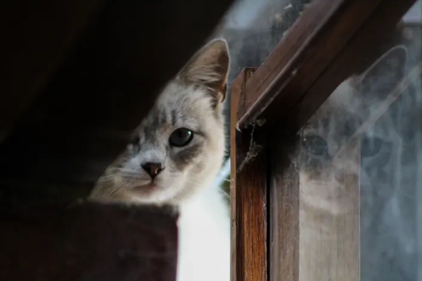
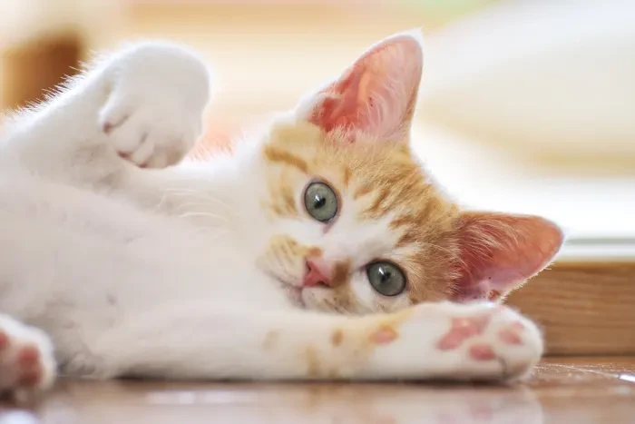
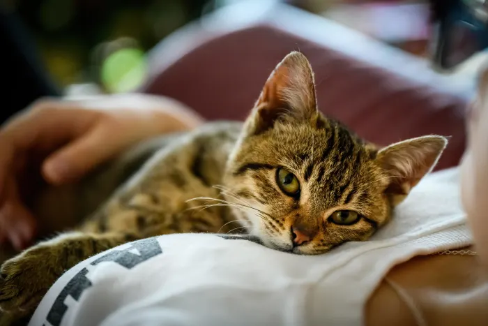
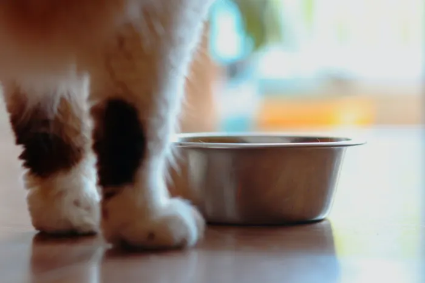
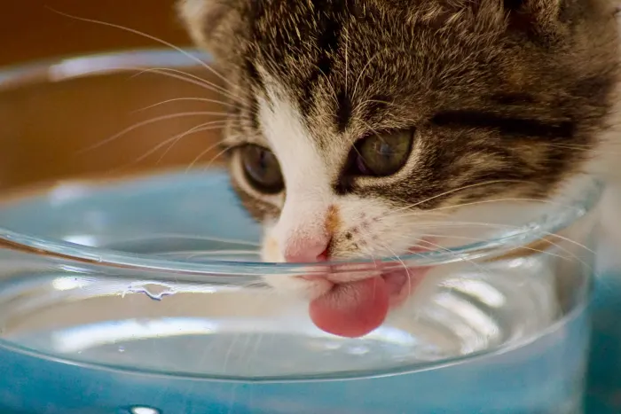
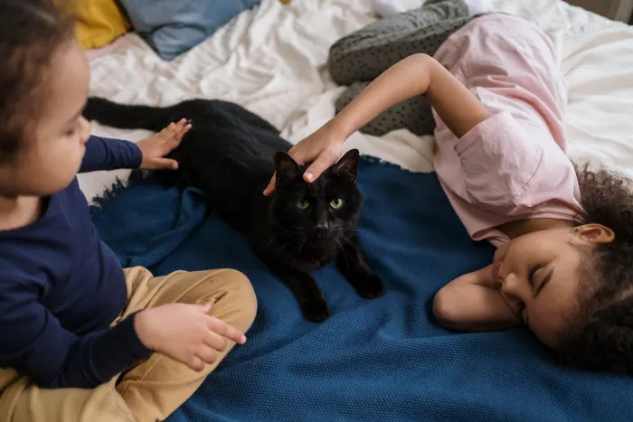
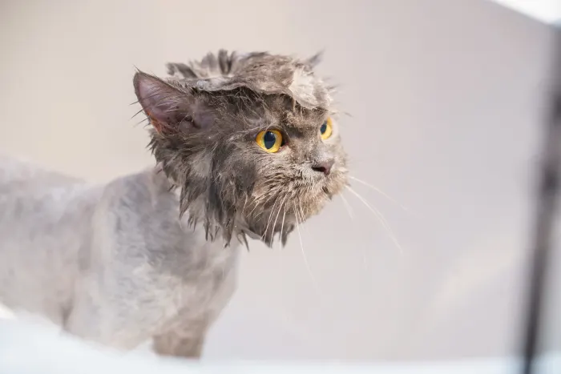
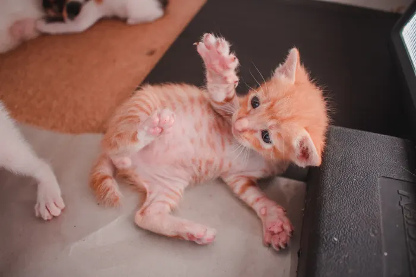
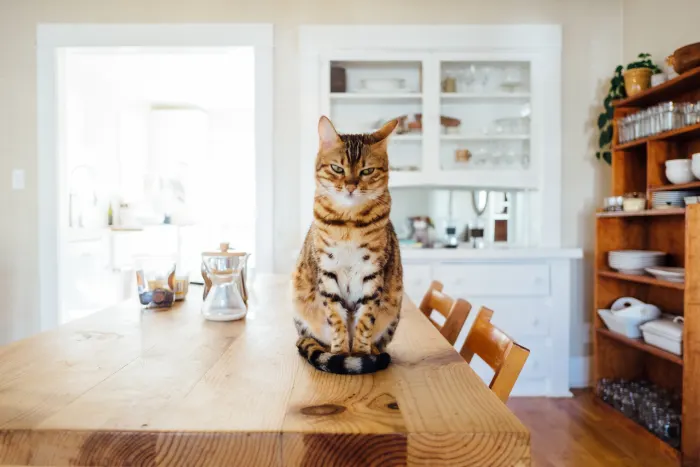

125 nombres únicos de gatos tímidos para gatos asustadizos¿Es seguro y está bien comprar un gatito en una tienda de mascotas?¿Los gatos recuerdan a sus dueños? Estudios e historias sorprendentes¿Tu gato se niega a comer? ¿Cuánto tiempo es seguro, riesgos y consejos para el cuidado?¿Por qué mi gato bebe mucha agua? Causas y solucionesEnseñar a un niño pequeño cómo interactuar con un gatoCómo bañar a un gato sin que lo arañeLas alternativas más responsables a la eliminación de las uñas de los gatosGuía de 10 pasos para irse de vacaciones sin su gato